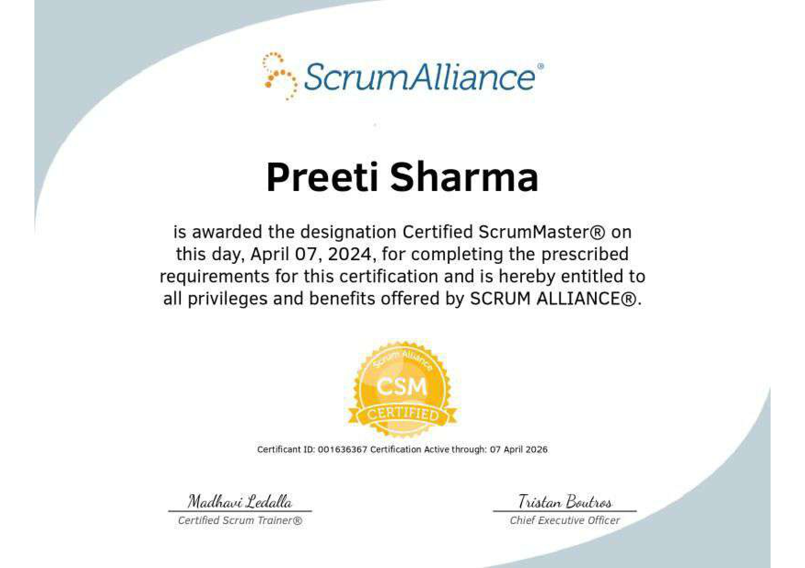

Supply Chain & Lifecycle professional specializing in EOL strategy, inventory optimisation, and financial risk management in MedTech environments.
View Resume Download Resume Case Studies LinkedInI work across supply chain, finance, and operations to enable lifecycle governance, improve forecasting accuracy, and optimize working capital in global MedTech systems.
Supply Chain Leadership: EOL Strategy · Inventory Governance · MedTech Lifecycle Management
Analytics & Tools: SAP · Power BI · Advanced Excel · Forecast Modelling
Operational Excellence: S&OP · Working Capital · CAPA · Process Optimization
Stakeholder Leadership: Cross-functional Governance · Vendor Management · Executive Reporting
Supply Chain Management

Scrum Master

Power BI

Lean Six Sigma Green Belt Certification